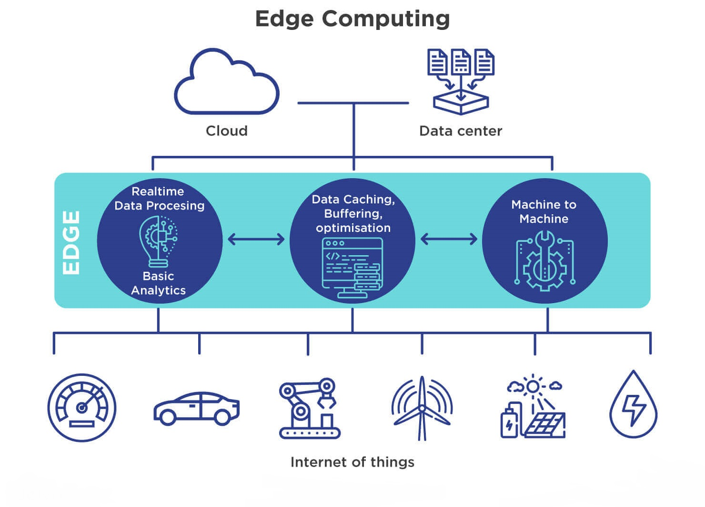
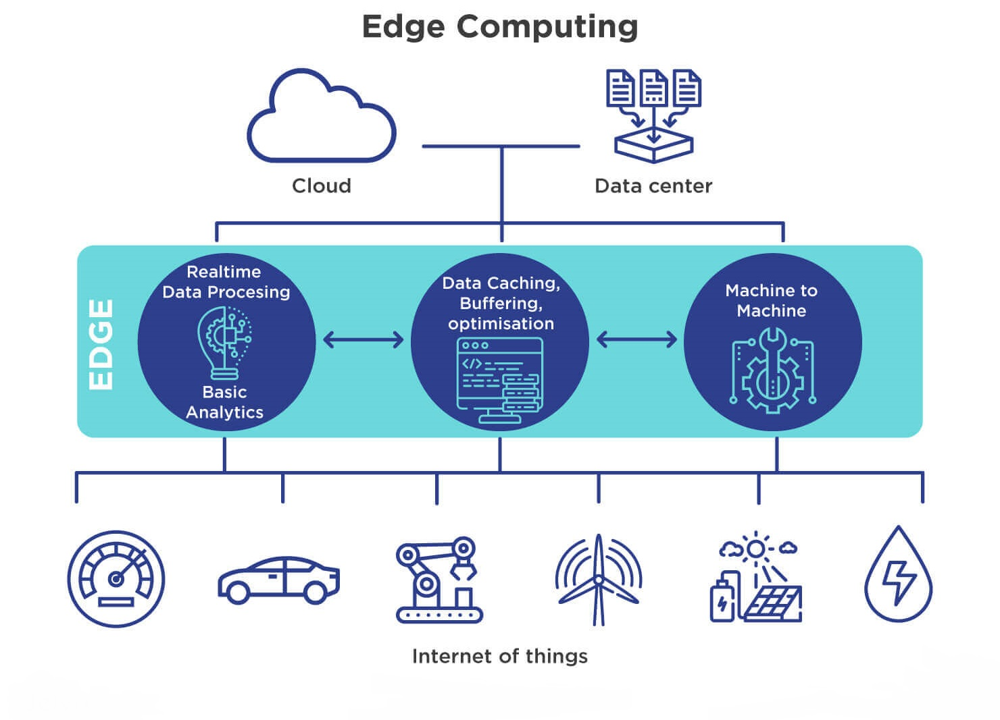
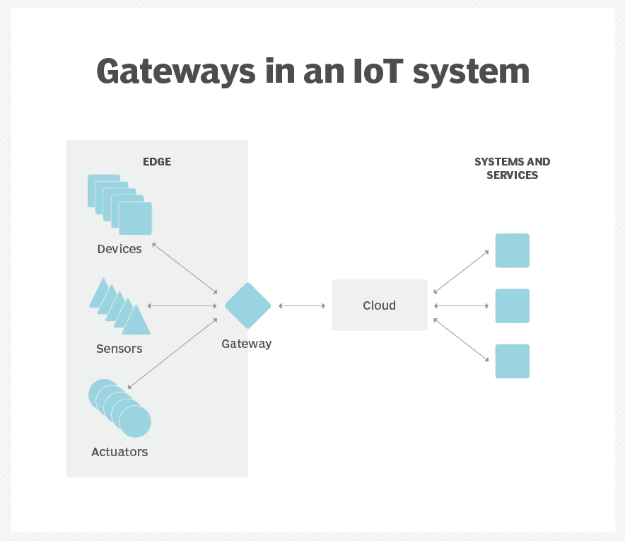

Topic information
- Category: Technological Innovations
- Posted on: 11 January, 2022
- Author: Aditya Verma
What is edge computing?
Edge computing is a distributed information technology
(IT) architecture in which client data is processed at the periphery of the network, as close to the
originating source as possible.
Data is the lifeblood of modern business, providing valuable business insight and supporting real-time
control over critical business processes and operations. Today's businesses are awash in an ocean of
data, and huge amounts of data can be routinely collected from sensors and IoT devices operating in real
time from remote locations and inhospitable operating environments almost anywhere in the world.
But this virtual flood of data is also changing the way
businesses handle computing. The traditional
computing paradigm built on a centralized data center and everyday internet isn't well suited to moving
endlessly growing rivers of real-world data. Bandwidth limitations, latency issues and unpredictable
network disruptions can all conspire to impair such efforts. Businesses are responding to these data
challenges through the use of edge computing architecture.
In simplest terms, edge computing moves some portion of storage and compute resources out of the central
data center and closer to the source of the data itself. Rather than transmitting raw data to a central data
center for processing and analysis, that work is instead performed where the data is actually generated --
whether that's a retail store, a factory floor, a sprawling utility or across a smart city. Only the result
of that computing work at the edge, such as real-time business insights, equipment maintenance predictions
or other actionable answers, is sent back to the main data center for review and other human
interactions.
Thus, edge computing is reshaping IT and business computing. Take a comprehensive look at what edge
computing is, how it works, the influence of the cloud, edge use cases, tradeoffs and implementation
considerations.
How does edge computing work?
Edge computing is all a matter of location. In traditional
enterprise computing, data is produced at a client endpoint, such as a user's computer. That data is moved
across a WAN such as the internet, through the corporate LAN, where the data is stored and worked upon by an
enterprise application. Results of that work are then conveyed back to the client endpoint. This remains a
proven and time-tested approach to client-server computing for most typical business applications.
But the number of devices connected to the internet, and the volume of data being produced by those devices
and used by businesses, is growing far too quickly for traditional data center infrastructures to
accommodate. Gartner predicted that by 2025, 75% of enterprise-generated data will be created outside of
centralized data centers. The prospect of moving so much data in situations that can often be time- or
disruption-sensitive puts incredible strain on the global internet, which itself is often subject to
congestion and disruption.
So IT architects have shifted focus from the central data center to the logical edge of the infrastructure
-- taking storage and computing resources from the data center and moving those resources to the point where
the data is generated. The principle is straightforward: If you can't get the data closer to the data
center, get the data center closer to the data. The concept of edge computing isn't new, and it is rooted in
decades-old ideas of remote computing -- such as remote offices and branch offices -- where it was more
reliable and efficient to place computing resources at the desired location rather than rely on a single
central location.
Edge computing puts storage and servers where the data is,
often requiring little more than a partial rack of gear to operate on the remote LAN to collect and process
the data locally. In many cases, the computing gear is deployed in shielded or hardened enclosures to
protect the gear from extremes of temperature, moisture and other environmental conditions. Processing often
involves normalizing and analyzing the data stream to look for business intelligence, and only the results
of the analysis are sent back to the principal data center.
The idea of business intelligence can vary dramatically. Some examples include retail environments where
video surveillance of the showroom floor might be combined with actual sales data to determine the most
desirable product configuration or consumer demand. Other examples involve predictive analytics that can
guide equipment maintenance and repair before actual defects or failures occur. Still other examples are
often aligned with utilities, such as water treatment or electricity generation, to ensure that equipment is
functioning properly and to maintain the quality of output.

Edge vs. Cloud vs. Fog computing
Edge vs. cloud vs. fog computing
Edge computing is closely associated with the concepts of cloud computing and fog computing. Although there
is some overlap between these concepts, they aren't the same thing, and generally shouldn't be used
interchangeably. It's helpful to compare the concepts and understand their differences.
One of the easiest ways to understand the differences between edge, cloud and fog computing is to highlight
their common theme: All three concepts relate to distributed computing and focus on the physical deployment
of compute and storage resources in relation to the data that is being produced. The difference is a matter
of where those resources are located.
Edge
Edge computing is the deployment of computing and storage resources at the location where data is produced. This ideally puts compute and storage at the same point as the data source at the network edge. For example, a small enclosure with several servers and some storage might be installed atop a wind turbine to collect and process data produced by sensors within the turbine itself. As another example, a railway station might place a modest amount of compute and storage within the station to collect and process myriad track and rail traffic sensor data. The results of any such processing can then be sent back to another data center for human review, archiving and to be merged with other data results for broader analytics.
Cloud
Cloud computing is a huge, highly scalable deployment of compute and storage resources at one of several distributed global locations (regions). Cloud providers also incorporate an assortment of pre-packaged services for IoT operations, making the cloud a preferred centralized platform for IoT deployments. But even though cloud computing offers far more than enough resources and services to tackle complex analytics, the closest regional cloud facility can still be hundreds of miles from the point where data is collected, and connections rely on the same temperamental internet connectivity that supports traditional data centers. In practice, cloud computing is an alternative -- or sometimes a complement -- to traditional data centers. The cloud can get centralized computing much closer to a data source, but not at the network edge.

Fog
But the choice of compute and storage deployment
isn't limited to the cloud or the edge. A cloud data center might be too far away, but the edge
deployment might simply be too resource-limited, or physically scattered or distributed, to make
strict edge computing practical. In this case, the notion of fog computing can help. Fog computing
typically takes a step back and puts compute and storage resources "within" the data, but not
necessarily "at" the data.
Fog computing environments can produce bewildering amounts of sensor or IoT data generated across
expansive physical areas that are just too large to define an edge. Examples include smart
buildings, smart cities or even smart utility grids. Consider a smart city where data can be used
to track, analyze and optimize the public transit system, municipal utilities, city services and
guide long-term urban planning. A single edge deployment simply isn't enough to handle such a
load, so fog computing can operate a series of fog node deployments within the scope of the
environment to collect, process and analyze data.
Note: It's important to repeat that fog computing and edge computing share an almost identical definition and architecture, and the terms are sometimes used interchangeably even among technology experts.
Why is edge computing important?
Computing tasks demand suitable architectures, and
the architecture that suits one type of computing task doesn't necessarily fit all types of
computing tasks. Edge computing has emerged as a viable and important architecture that supports
distributed computing to deploy compute and storage resources closer to -- ideally in the same
physical location as -- the data source. In general, distributed computing models are hardly new,
and the concepts of remote offices, branch offices, data center colocation and cloud computing have
a long and proven track record.
But decentralization can be challenging, demanding high levels of monitoring and control that are
easily overlooked when moving away from a traditional centralized computing model. Edge computing
has become relevant because it offers an effective solution to emerging network problems associated
with moving enormous volumes of data that today's organizations produce and consume. It's not just a
problem of amount. It's also a matter of time; applications depend on processing and responses that
are increasingly time-sensitive.
Consider the rise of self-driving cars. They will depend on intelligent traffic control signals. Cars and traffic controls will need to produce, analyze and exchange data in real time. Multiply this requirement by huge numbers of autonomous vehicles, and the scope of the potential problems becomes clearer. This demands a fast and responsive network. Edge -- and fog-- computing addresses three principal network limitations: bandwidth, latency and congestion or reliability.
-
Bandwidth :
Bandwidth is the amount of data which a network can carry over time, usually expressed in bits per second. All networks have a limited bandwidth, and the limits are more severe for wireless communication. This means that there is a finite limit to the amount of data -- or the number of devices -- that can communicate data across the network. Although it's possible to increase network bandwidth to accommodate more devices and data, the cost can be significant, there are still (higher) finite limits and it doesn't solve other problems. -
Latency :
Latency is the time needed to send data between two points on a network. Although communication ideally takes place at the speed of light, large physical distances coupled with network congestion or outages can delay data movement across the network. This delays any analytics and decision-making processes, and reduces the ability for a system to respond in real time. It even cost lives in the autonomous vehicle example. -
Congestion :
The internet is basically a global "network of networks." Although it has evolved to offer good general-purpose data exchanges for most everyday computing tasks -- such as file exchanges or basic streaming -- the volume of data involved with tens of billions of devices can overwhelm the internet, causing high levels of congestion and forcing time-consuming data retransmissions. In other cases, network outages can exacerbate congestion and even sever communication to some internet users entirely - making the internet of things useless during outages.
By deploying servers and storage where the data is generated, edge computing can operate many devices over a much smaller and more efficient LAN where ample bandwidth is used exclusively by local data-generating devices, making latency and congestion virtually nonexistent. Local storage collects and protects the raw data, while local servers can perform essential edge analytics -- or at least pre-process and reduce the data -- to make decisions in real time before sending results, or just essential data, to the cloud or central data center.
Edge computing use cases and examples
In principal, edge computing techniques are used to collect, filter, process and analyze data "in-place" at or near the network edge. It's a powerful means of using data that can't be first moved to a centralized location -- usually because the sheer volume of data makes such moves cost-prohibitive, technologically impractical or might otherwise violate compliance obligations, such as data sovereignty. This definition has spawned myriad real-world examples and use cases:
-
Manufacturing :
An industrial manufacturer deployed edge computing to monitor manufacturing, enabling real-time analytics and machine learning at the edge to find production errors and improve product manufacturing quality. Edge computing supported the addition of environmental sensors throughout the manufacturing plant, providing insight into how each product component is assembled and stored -- and how long the components remain in stock. The manufacturer can now make faster and more accurate business decisions regarding the factory facility and manufacturing operations. -
Farming :
Consider a business that grows crops indoors without sunlight, soil or pesticides. The process reduces grow times by more than 60%. Using sensors enables the business to track water use, nutrient density and determine optimal harvest. Data is collected and analyzed to find the effects of environmental factors and continually improve the crop growing algorithms and ensure that crops are harvested in peak condition. -
Network optimization :
Edge computing can help optimize network performance by measuring performance for users across the internet and then employing analytics to determine the most reliable, low-latency network path for each user's traffic. In effect, edge computing is used to "steer" traffic across the network for optimal time-sensitive traffic performance. -
Workplace safety:
Edge computing can combine and analyze data from on-site cameras, employee safety devices and various other sensors to help businesses oversee workplace conditions or ensure that employees follow established safety protocols -- especially when the workplace is remote or unusually dangerous, such as construction sites or oil rigs. -
Improved healthcare :
The healthcare industry has dramatically expanded the amount of patient data collected from devices, sensors and other medical equipment. That enormous data volume requires edge computing to apply automation and machine learning to access the data, ignore "normal" data and identify problem data so that clinicians can take immediate action to help patients avoid health incidents in real time. -
Transportation :
Autonomous vehicles require and produce anywhere from 5 TB to 20 TB per day, gathering information about location, speed, vehicle condition, road conditions, traffic conditions and other vehicles. And the data must be aggregated and analyzed in real time, while the vehicle is in motion. This requires significant onboard computing -- each autonomous vehicle becomes an "edge." In addition, the data can help authorities and businesses manage vehicle fleets based on actual conditions on the ground. -
Retail :
Retail businesses can also produce enormous data volumes from surveillance, stock tracking, sales data and other real-time business details. Edge computing can help analyze this diverse data and identify business opportunities, such as an effective endcap or campaign, predict sales and optimize vendor ordering, and so on. Since retail businesses can vary dramatically in local environments, edge computing can be an effective solution for local processing at each store.
 

What are the benefits of edge computing?
Edge computing addresses vital infrastructure challenges -- such as bandwidth limitations, excess latency and network congestion -- but there are several potential additional benefits to edge computing that can make the approach appealing in other situations.
-
Autonomy :
Edge computing is useful where connectivity is unreliable or bandwidth is restricted because of the site's environmental characteristics. Examples include oil rigs, ships at sea, remote farms or other remote locations, such as a rainforest or desert. Edge computing does the compute work on site -- sometimes on the edge device itself -- such as water quality sensors on water purifiers in remote villages, and can save data to transmit to a central point only when connectivity is available. By processing data locally, the amount of data to be sent can be vastly reduced, requiring far less bandwidth or connectivity time than might otherwise be necessary. -
Data sovereignty :
Moving huge amounts of data isn't just a technical problem. Data's journey across national and regional boundaries can pose additional problems for data security, privacy and other legal issues. Edge computing can be used to keep data close to its source and within the bounds of prevailing data sovereignty laws, such as the European Union's GDPR, which defines how data should be stored, processed and exposed. This can allow raw data to be processed locally, obscuring or securing any sensitive data before sending anything to the cloud or primary data center, which can be in other jurisdictions. -
Edge security :
Finally, edge computing offers an additional opportunity to implement and ensure data security. Although cloud providers have IoT services and specialize in complex analysis, enterprises remain concerned about the safety and security of data once it leaves the edge and travels back to the cloud or data center. By implementing computing at the edge, any data traversing the network back to the cloud or data center can be secured through encryption, and the edge deployment itself can be hardened against hackers and other malicious activities -- even when security on IoT devices remains limited.

Challenges of edge computing
Although edge computing has the potential to provide compelling benefits across a multitude of use cases, the technology is far from foolproof. Beyond the traditional problems of network limitations, there are several key considerations that can affect the adoption of edge computing:
-
Limited capability :
Part of the allure that cloud computing brings to edge -- or fog -- computing is the variety and scale of the resources and services. Deploying an infrastructure at the edge can be effective, but the scope and purpose of the edge deployment must be clearly defined -- even an extensive edge computing deployment serves a specific purpose at a pre-determined scale using limited resources and few services.
-
Connectivity :
Edge computing overcomes typical network limitations, but even the most forgiving edge deployment will require some minimum level of connectivity. It's critical to design an edge deployment that accommodates poor or erratic connectivity and consider what happens at the edge when connectivity is lost. Autonomy, AI and graceful failure planning in the wake of connectivity problems are essential to successful edge computing. -
Security :
IoT devices are notoriously insecure, so it's vital to design an edge computing deployment that will emphasize proper device management, such as policy-driven configuration enforcement, as well as security in the computing and storage resources -- including factors such as software patching and updates -- with special attention to encryption in the data at rest and in flight. IoT services from major cloud providers include secure communications, but this isn't automatic when building an edge site from scratch. -
Data lifecycles :
The perennial problem with today's data glut is that so much of that data is unnecessary. Consider a medical monitoring device -- it's just the problem data that's critical, and there's little point in keeping days of normal patient data. Most of the data involved in real-time analytics is short-term data that isn't kept over the long term. A business must decide which data to keep and what to discard once analyses are performed. And the data that is retained must be protected in accordance with business and regulatory policies.
Edge computing implementation
Edge computing is a straightforward idea that
might look easy on paper, but developing a cohesive strategy and implementing a sound deployment
at the edge can be a challenging exercise.
The first vital element of any successful technology deployment is the creation of a meaningful
business and technical edge strategy. Such a strategy isn't about picking vendors or gear.
Instead, an edge strategy considers the need for edge computing. Understanding the "why" demands
a clear understanding of the technical and business problems that the organization is trying to
solve, such as overcoming network constraints and observing data sovereignty.
Such strategies might start with a discussion
of just what the edge means, where it exists for the business and how it should benefit the
organization. Edge strategies should also align with existing business plans and technology
roadmaps. For example, if the business seeks to reduce its centralized data center footprint,
then edge and other distributed computing technologies might align well.
As the project moves closer to implementation, it's important to evaluate hardware and software
options carefully. There are many vendors in the edge computing space, including Adlink
Technology, Cisco, Amazon, Dell EMC and HPE. Each product offering must be evaluated for cost,
performance, features, interoperability and support. From a software perspective, tools should
provide comprehensive visibility and control over the remote edge environment.
The actual deployment of an edge computing initiative can vary dramatically in scope and scale,
ranging from some local computing gear in a battle-hardened enclosure atop a utility to a vast
array of sensors feeding a high-bandwidth, low-latency network connection to the public cloud.
No two edge deployments are the same. It's these variations that make edge strategy and planning
so critical to edge project success.
An edge deployment demands comprehensive monitoring. Remember that it might be difficult -- or
even impossible -- to get IT staff to the physical edge site, so edge deployments should be
architected to provide resilience, fault-tolerance and self-healing capabilities. Monitoring
tools must offer a clear overview of the remote deployment, enable easy provisioning and
configuration, offer comprehensive alerting and reporting and maintain security of the
installation and its data. Edge monitoring often involves an array of metrics and KPIs, such as
site availability or uptime, network performance, storage capacity and utilization, and compute
resources.
And no edge implementation would be complete without a careful consideration of edge maintenance:
-
Security :
Physical and logical security precautions are vital and should involve tools that emphasize vulnerability management and intrusion detection and prevention. Security must extend to sensor and IoT devices, as every device is a network element that can be accessed or hacked -- presenting a bewildering number of possible attack surfaces.
Connectivity :
Connectivity is another issue, and provisions must be made for access to control and reporting even when connectivity for the actual data is unavailable. Some edge deployments use a secondary connection for backup connectivity and control.Management :
The remote and often inhospitable locations of edge deployments make remote provisioning and management essential. IT managers must be able to see what's happening at the edge and be able to control the deployment when necessary.Physical maintenance :
Physical maintenance requirements can't be overlooked. IoT devices often have limited lifespans with routine battery and device replacements. Gear fails and eventually requires maintenance and replacement. Practical site logistics must be included with maintenance.Edge computing, IoT and 5G possibilities
Edge computing continues to evolve, using new technologies and practices to enhance its capabilities and performance. Perhaps the most noteworthy trend is edge availability, and edge services are expected to become available worldwide by 2028. Where edge computing is often situation-specific today, the technology is expected to become more ubiquitous and shift the way that the internet is used, bringing more abstraction and potential use cases for edge technology. This can be seen in the proliferation of compute, storage and network appliance products specifically designed for edge computing. More multivendor partnerships will enable better product interoperability and flexibility at the edge. An example includes a partnership between AWS and Verizon to bring better connectivity to the edge. Wireless communication technologies, such as 5G and Wi-Fi 6, will also affect edge deployments and utilization in the coming years, enabling virtualization and automation capabilities that have yet to be explored, such as better vehicle autonomy and workload migrations to the edge, while making wireless networks more flexible and cost-effective.

Edge computing gained notice with the rise of IoT and the sudden glut of data such devices produce. But with IoT technologies still in relative infancy, the evolution of IoT devices will also have an impact on the future development of edge computing. One example of such future alternatives is the development of micro modular data centers (MMDCs). The MMDC is basically a data center in a box, putting a complete data center within a small mobile system that can be deployed closer to data -- such as across a city or a region -- to get computing much closer to data without putting the edge at the data proper.